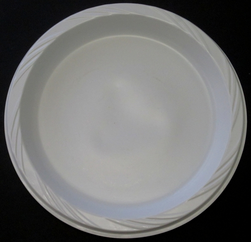

This chapter introduces the fundamental building blocks of matter and some of the important classification schemes scientists use to communicate about matter. One of the main challenges of this introduction (and this is true at all levels) is that learners are easily confused by the terminology. 'Atom' is often confused with 'molecule' and the distinction between element and compound is also one that learners find difficult to make. For this reason, these concepts and their explanations are repeated very often throughout the chapter. We have also included many diagrams of what the different classes of matter would look like at the atomic/molecular scale. Since these atoms and molecules are too small to see even with a microscope, science educationists use the adjective 'sub-microscopic' to refer to diagrams that depict entities on this scale. The ability to imagine chemical events as they would happen on the sub-microscopic scale lies at the heart of understanding chemistry
and the importance of developing this skill cannot be overstated.
It is equally important for learners to be able to interpret and draw sub-microscopic diagrams. We have also built in activities where learners have to construct molecules using plasticine or play dough, to reinforce the skill. Play dough is easy and cheap to make; a recipe follows.
Play dough recipe
INGREDIENTS:
2 cups flour
2 cups warm water
1 cup salt
2 tablespoons vegetable oil
1 tablespoon cream of tartar (optional for improved elasticity)
food colouring in different colours
METHOD:
Mix all of the ingredients together and stir over low heat. The dough will begin to thicken until it resembles mashed potatoes.
When the dough pulls away from the sides and clumps in the centre of the pan, remove the pan from the heat and allow the dough to cool enough to handle. Note: If the dough is still sticky, it simply needs to be cooked longer.
Turn the dough out onto a clean surface and knead vigorously until smooth. Divide the dough into balls for colouring.
Make a small depression in the centre of the ball, and pour a little food colouring into it. Work the colour through the dough, adding more if you wish to increase the intensity of the colour.
1.1 The building blocks of matter (1 hour)
Tasks
Skills
Recommendation
Activity: A quick revision of the Periodic Table of Elements
Accessing and recalling information, sorting and classifying, writing
Suggested (optional revision)
1.2 Sub-atomic particles (1.5 hours)
Tasks
Skills
Recommendation
Activity: Make your own model of an atom
Reading, interpreting, accessing and recalling, making, drawing, labelling, communicating
CAPS suggested
1.3 Pure substances (3 hours)
Tasks
Skills
Recommendation
Activity: Studying representations of atoms and elements
Accessing and recalling information, interpreting, reading, writing
Suggested
Activity: Atoms and molecules
Accessing and recalling information, revising
Suggested
Activity: Writing and understanding simple chemical formulae
Accessing and recalling information, interpreting, sorting and classifying, reading, writing, making, drawing, communicating
CAPS suggested
Activity: Imagining the decomposition of water at the scale of molecules
Accessing and recalling information, interpreting, sorting and classifying, making, writing,
Optional/extension
Investigation: The decomposition of copper chloride
Observing, recording information, interpreting,
CAPS suggested
1.4 Mixtures of elements and compounds (0.5 hours)
Tasks
Skills
Recommendation
Activity: Distinguishing between elements, compounds and mixtures
Sorting and classifying,
Suggested
What is matter made up of, at the most basic level?
What do elements look like at an atomic level?
How are the atoms of one element different from the atoms of another element?
Which table summarises all the elements known to humankind according to their chemical properties?
Are atoms the smallest particles making up matter, or are they themselves made up of even smaller particles?
What do scientists know about the 'inside' of the atom?
Why do we say atoms are 'neutral'?
When is a substance 'pure'?
How is a compound different from an element?
How is a molecule different from an atom?
What holds molecules together?
What happens to atoms and molecules during a chemical reaction?
How is a mixture of elements different from a compound?
In this chapter, we will answer questions about the basic building block of matter, the atom.
The building blocks of matter
atoms
element
scientific model
postulate
What is matter? The traditional definition says matter is anything that has mass and occupies volume (takes up space).
We could say that matter is 'stuff', but that would not be very specific. To understand matter in a scientific way, we need to imagine what it is made of.
All the different types of matter that exist on Earth are made up of one or more chemical elements. You were introduced to some of the elements in Gr. 7 Matter and Materials. Before reading further, stop and see how much you can remember about the elements. Write down what you remember or say it out loud.
There are more than 100 known elements and scientists are still looking for more. We also learnt that each element has a unique name, chemical symbol and atomic number that represents it, along with a fixed place on the Periodic Table of elements.
The title of this section is 'The building blocks of matter'. For this reason, we will start our discovery by imagining a wall that has been built of bricks, like the one in the following picture. Can you see how the wall is made of many identical bricks?
A brick wall.
This is synonymous with an element where all the atoms are identical (they are of the same kind).
Similarly, we can think of most forms of matter as being made up of many, many small particles. These small particles are called atoms.
What are atoms?
The early Greek philosophers proposed that all matter is made up of incredibly small but discrete units (like the bricks in our wall example). Democritus (460 - 370 BC) was the first to call these units atomos. From this phrase came the term atom that we use today.
Atomos is a Greek phrase which means 'not cut' or 'that which is indivisible'.
Democritus first used the termatomosmore than 2000 years ago to describe the smallest particle that matter is made of.
It took a very long time (more than 2000 years!) for the ideas of Democritus to be accepted by scientists. Why do you think it took so long? Discuss this in your class.
Get learners to discuss this in class for a few minutes. You could steer the discussion with the following questions:
Do you believe in vampires? (Fairies, zombies, the Easter Bunny, Thokoloshe, etc.)
Do you think they really exist?
When do we know something really exists? (When we have hard evidence for its existence.)
Could it be that scientists did not believe in the existence of atoms because they could find no hard evidence for their existence?
Why do you think scientists could not find evidence for the existence of atoms?
Could it be because atoms are so incredibly small that they cannot be seen by the naked eye?
Atoms are so small that until recently, it was impossible to see them, even using the strongest microscope. Nowadays there are microscopes connected to sophisticated computer software, which make it possible for scientists to actually 'see' atoms.
Find out more about these microscopes which enable people to 'see' atomsbit.ly/14AbIai
Can you imagine how difficult it must have been to convince those early scientists that matter consists of really, really small particles that no-one has ever seen?
Atoms are so small that a glass of water contains more atoms than there are glasses of water in the Atlantic Ocean.
How small are atoms really? Well, about 5 000 000 000 000 000 000 of them would fit inside the full stop at the end of this sentence. Of course different atoms have different sizes, so this is just an approximate number. Wait... atoms have different sizes? How does that work? In the next section, we will find out.
Democritus' ideas about matter were ignored and forgotten for more than 2000 years, until an Englishman by the name of John Dalton reintroduced them to the scientific world in 1803. Dalton made five claims about atoms that are still largely accepted as the truth today. Three of these claims, or postulates as they are more commonly called, tell us how to understand elements. We will get to the remaining two postulates later. Here is what Dalton taught us about elements:
Each element consists of indivisible, minute particles called atoms.
All atoms of a given element are identical.
Atoms of different elements have different masses.
This ties in with what we learnt about the elements in Gr. 7 Matter and Materials. Let us revise what we already know:
The Periodic Table of elements was originally made to represent the patterns observed in the chemical properties of the elements.
Each element has a fixed position on the Periodic Table.
The elements are arranged in order of increasing atomic number.
The only letter that does not appear on the Periodic Table is the letter 'J'.
The elements are arranged in order of increasing atomic number.
You can find a larger version of the Periodic Table on the inside cover of your book for easy reference.
A quick revision of the Periodic Table of Elements
This will help revise some of the concepts taught in Gr. 7 about elements and the Periodic Table.
QUESTIONS:
In your own words, explain what you think the Periodic Table is.
This is an open-ended question for learners to show what they understand at this point about the Periodic Table, They may write explanations such as:
The Periodic Table lists all the elements that we know about on earth.
The Periodic Table classifies all the elements on earth.
The Periodic Table gives us information about the elements, such as their names, symbols and atomic numbers.
We can see patterns in the Periodic Table in terms of chemical and physical properties.
Where do we find metals and where do we find non-metals on the Periodic Table?
Metals are found on the left and non-metals are found on the right.
What is the third class of elements called that we have learned about and where are they found.
These are the semi-metals and they are found in between the metals and non-metals in a jagged line.
Give the symbols of two examples of metals and two examples of non-metals.
Any of the metals on the left hand side of the table, such as Li, Na, K, Ca, Mg, etc. and any of the non-metals on the right hand side, such as C, N, O, Cl, I, He, S, etc.
Complete the following sentence: The elements are arranged in order of increasing _____.
atomic number.
What is the atomic number of hydrogen and what is the atomic number of carbon?
Hydrogen is 1 and Carbon is 6.
Complete the following table by supplying either the name or symbol for the elements listed, and whether it is a metal, non-metal, or semi-metal.
Name
Symbol
Metal or non-metal?
Hydrogen
Li
Na
Carbon
Si
Magnesium
O
Cl
Potassium
Boron
Cu
Name
Symbol
Metal or non-metal?
Hydrogen
H
Non-metal
Lithium
Li
Metal
Sodium
Na
Metal
Carbon
C
Non-metal
Silicon
Si
Semi-metal
Magnesium
Mg
Metal
Oxygen
O
Non-metal
Chlorine
Cl
Non-metal
Potassium
K
Metal
Boron
B
Semi-metal
Copper
Cu
Metal
Are atoms really the smallest particles? Dalton thought so! He also postulated that:
4. Atoms can neither be created nor destroyed during chemical reactions .
Dalton was correct in saying that atoms cannot be created or destroyed in chemical reactions. Does that mean atoms are the smallest particles of matter? Not exactly. Scientists have since discovered that atoms themselves are made up of even smaller particles. We call these sub-atomic particles.
We will learn about the sub-atomic particles that make up atoms shortly, but first we need to talk briefly about scientific models. Do you know what a model car is?
Here we mention that atoms cannot be destroyed in chemical reactions. This refers to the conservation of mass during a chemical reaction. Atoms can however, be 'smashed' apart or split into smaller parts when enough kinetic energy is present, for example, in an atomic bomb. Although the name 'atom' is derived from the Greek word meaning 'indivisible', they are not truly indivisible.
Scientists use models to help them understand the real world and how it works.
Scientific models
Have you ever seen a geographical globe? The globe in the next picture is a model of the Earth. What do you think it can be used for? Do you think we could learn more from a globe than from a map of the Earth?
Get the learners to discuss this in class. Guide them towards the following ideas:
Ask them to look at the map of Earth and work out what is exactly on the other side of the Earth from South Africa. If it was possible to make a tunnel through the centre of the Earth, where would the exit of the tunnel be? This is very difficult to do with a map, but with a globe one can easily see which part of the world lies opposite South Africa on the other side of the Earth.
A globe of the world.A map of the world.
Globes are the best representations we have of our planet; because they are three-dimensional. Can you think of some of the things we can learn about the Earth from a globe?
Here are some things to help learners think about:
A globe can show us the positions of the continents relative to each other much more realistically than any map ever could.
a globe is more accurate than a flat map in terms of relative sizes of countries.
A globe can also teach us about the movement of the Earth, how it spins on its own axis to create night and day.
A globe can also show how the Earth moves around the Sun to create the seasons.
We can also learn about latitude and longitude from a globe.
Sometimes a model can be an idea or a set of ideas; a simplified representation of difficult concepts or phenomena. A scientific model is a set of ideas that tells a story about something in the world around us, in the same way that the globe tells us a story about Earth.
A model of the atom
Atoms cannot be seen with the naked eye, only with very powerful microscopes. However, scientists have a good idea of how they behave in different situations. Based on these ideas, they have developed a model of what the atom looks like, to help us understand atoms better.
The modern model of the atom teaches us that all atoms are made up of sub-atomic particles. Sub-atomic means 'smaller than the atom'. In the next section, we are going to learn more about these interesting little particles.
The 'Build an atom' link takes you to a website that draws a representative image of the atom, starting with hydrogen, the first element on the Periodic Table, and allows you to click through all the elements, or jump to a specific element. You could show it to the learners to introduce the next section on sub-atomic particles and then return again later to wrap up the section and reinforce all the new information.
Sub-atomic particles
atomic nucleus
sub-atomic particle
electrons
neutrons
protons
After many decades of studying atoms, scientists discovered that all atoms are made up of three different kinds of sub-atomic particles. They are called:
The following picture of the atom shows how they all fit together.
Neutrons, protons and electrons are sub-atomic particles that make up an atom.
These three sub-atomic particles form the basis of our modern-day understanding of what atoms look like on the inside. Let's look at what is known about each particle in turn.
The branch of physics that studies sub-atomic particles is called particle physics. Do you know the name of the particle that was discovered during 2012? It was a major scientific discovery for physics!
In response to the "Did you know" margin box, the Higgs boson or Higgs particle was discovered in 2012. It was a huge scientific discovery. In short, the Higgs boson is a fundamental particle which plays a role in giving other particles its mass. The existence of the particle was first proposed in 1964 by a group of 6 physicists, one being Peter Higgs. Scientists searched for evidence of its existence for 50 years and eventually in July 2012 with the use of the Large Hadron Collider at CERN, they identified a particle which they thought was the Higgs boson, and have since confirmed this. Here are two sites if you would like to explore this further, either for your own interest or with your class: bit.ly/163XeMI and bit.ly/142RCzg.
Protons
The protons are deep inside the atom, in a zone called the nucleus. The protons are said to be positively charged. What does this mean?
To answer this question, think about the following phenomena that have been discovered by scientists:
When two protons get near each other, they push each other away.
When an electron gets near a proton, they attract each other.
Two electrons will also push each other away.
What causes this? There must be some property of electrons and protons that make them apply these forces. Scientists use the word 'charge' to represent the property these particles have. We observe that:
like charges repel (meaning the same charges push each other away)
opposite charges attract
Regarding the "take note": it is important to note that the elements are arranged by the order of increasing atomic number and NOT the increasing atomic mass number(even though the general trend is evident). Learners might infer that with each additional proton, elements further down the Periodic Table are heavier than those higher up, or towards the left. Atomic number and atomic mass number (not on their Periodic Tables) are only really dealt with in Gr. 10 so it is difficult to explain the difference. You could point out exceptions, disproving their assumption, for example, Argon - Potassium, Cobalt - Nickel, Tellerium - Iodine.
Neutrons
Neutrons are particles that are neither positively nor negatively charged. They are neutral. The neutrons together with protons form the tightly packed nucleus at the centre of the atom.
The nucleus is very dense. That means the protons and neutrons are tightly packed and are very heavy for their size. If the nucleus was scaled up to the size of a full stop, it would weigh as much as a fully loaded minibus taxi, or 2,5 tonnes!
Electrons
Electrons are the smallest of the three sub-atomic particles. Electrons are about 2000 times smaller than protons and neutrons. The electrons move in a zone around the atomic nucleus at extremely high speeds, forming an electron cloud that is much larger than the nucleus. Have a look again at the drawing which shows a model of the atom to see this.
If we could enlarge the size of the nucleus to the size of the full stop at the end of this sentence, the outer edges of the electron cloud surrounding it would be between 3 and 5 meters away.
These three sub-atomic particles help us understand what atoms look like on the inside.
Make your own model of an atom
You can use many different materials for this activity, such as playdough balls, beads, dried lentils or peas, pasta shells, etc. Assign learners different elements so that they will have different numbers of protons, neutrons and electrons to work with. They should choose one colour or type of object to represent each of the three types of sub-atomic particles. They must show the same number of each sub-atomic particle as they are dealing with neutral atoms (ie. the number of electrons equals the number of protons), and not with isotopes which have different numbers of neutrons.
Do you remember Dalton's 3 postulates from the beginning of the chapter? They are:
Each element consists of indivisible, minute particles called atoms.
All atoms of a given element are identical.
Atoms of different elements have different masses.
So, each element on the Periodic Table has its own type of atom. The atoms of different elements are different as they have different numbers of protons. Do you remember that we said the atomic number of an element is the number of protons in an atom of that element?
So, if we wanted to make a model of a nitrogen atom, how many protons would we need?
7 protons
If we wanted to make a model of a sulfur atom, how many protons would we need?
16 protons
In most atoms of an element, the number of neutrons in the nucleus is the same as the number of protons. The number of electrons can change, but for now we are going to make models of neutral atoms. So, there must be the same number of electrons as protons.
Learners should also be encouraged to take into account the size of the particles. So the objects they use for the protons and neutrons should be of a similar size, and the objects they use for electrons should be smaller.
Here are some photos to assist you in guiding the learners to construct their models. This example if for a boron atom as there are 3 protons.
Start with a blank paper plate.Add the protons and neutrons in the centre.Add the electrons in the surrounding space.Add in the labels.
MATERIALS :
glue
paper plate
playdough, beads, dried lentils or peas, etc
INSTRUCTIONS:
After reading the information about atoms, your teacher will give you an element of which you have to build a model. What is the name of your element?
Learner-dependent answer.
What is the atomic number of your element?
Learner-dependent answer.
How many protons will you need to make for your atom?
Learner-dependent answer. This must be the same as the atomic number.
Now decide what objects you will use to create the subatomic particles in your model.
Stick these onto the paper plate and provide labels.
Learners must label the element they are doing, as well as the electrons, protons, neutrons and the nucleus.
After you have built your model, draw a model of your atom below. Provide labels. These are both models of your atom!
Here is some general information on how to use simulations in the classroom: bit.ly/14nA5RI. And this pdf contains more specific information for the teacher about the 'Build an atom' simulation bit.ly/142dSct
Can you remember learning about mixtures in Gr. 7? You may remember that a mixture consists of two or more substances mixed together. The next section is NOT about mixtures. It is about substances that are not mixed with anything and consists of only one type of matter throughout. Such substances are called pure substances. In this sense, 'pure' simply means: not mixed with any other substances.
The 'Just how small is an atom?' video is a nice animation that attempts to put the size of an atom and its sub-atomic particles into perspective by comparing it to real life objects like fruit, houses and cars. It is fast-paced and uses many metaphors, so could potentially be confusing and too abstract. You may want to watch it first and decide whether your learners would benefit from it.
Pure substances
pure substance
compound
chemical bond
molecule
chemical formula
chemical reaction
decomposition reaction
Important note: In the previous section we used coloured circles/beads/balls/beans, etc to represent the different sub-atomic particles and to show how they are arranged in atoms. However, in this section as well as in the last chapter on chemical reactions, we will be using coloured circles/beads/balls/beans to represent whole atoms and the different colours and sizes will show different atoms in compounds and elements. It is important that learners realise at what scale you are working at when you draw different diagrams on the board or talk about the diagrams in this workbook.
Here in these diagrams, the different coloured circles represent differentatoms.
There are only two classes of pure substances, namely elements and compounds. To understand the difference between the two, look at the two diagrams below.
An element consists of atoms that are all the same kind.A compound consists of two or more kinds of atoms in a fixed ratio.
The diagram on the left represents an element. Can you see that all the atoms are of the same kind? An element is a material that is made up of atoms of only one kind.
Now look at the diagram on the right representing a compound. This diagram shows two important things about compounds:
The compound consists of atoms, but there are more than one kind.
The different atoms are combined in little clusters and the clusters are all exactly the same.
A compound is a material that is made up of two or more kinds of atoms that are chemically bonded together.
We are now going to explore each of these classes on their own and discuss some examples of each.
Elements
We have just learnt that an element is made up of atoms of the same kind. This means that if we had a piece of the metal copper, it would be made up entirely of copper atoms. Likewise, a piece of silver would be made up entirely of silver atoms. Copper and silver look different and have different properties, because they are made up of different atoms. Have a look at the following table which illustrates the sub-microscopic image of the atoms and also a piece of jewellery made from each of the different metals.
Copper
Silver
Sub-microscopic structure of copper
The element copper (Cu) consists of only copper atoms.
Sub-microscopic structure of silver
The element silver (Ag) consists of only silver atoms.
Why are the silver atoms bigger than the copper atoms in the previous diagrams? Hint: Find the two elements on the Periodic Table and compare their positions.
Silver lies below copper on the Periodic Table, which means the atoms of silver are bigger than those of copper.
Do you think the substance represented in the following diagram is an element? To help you answer the question, go through the questions below the diagram.
First write down what you see in the picture.
Learners may say they see pairs of atoms stuck together.
Are the clusters tightly packed or far apart?
They are relatively far apart.
What does that mean? Do you think the substance is a solid, a liquid or a gas?
The substance is a gas.
Do you think it is a mixture of substances or a pure substance? Why do you think so?
It is a pure substance because all the molecules look the same.
Are the atoms all of the same kind?
Yes, they are.
What class of substances is made up of only one kind of atom?
The elements.
Is the substance an element? Why?
The substance is an element because it is made of only kind of atom.
Note: This actually represents the diatomic elements, such as oxygen (O2), nitrogen (N2), hydrogen (H2), which exist as diatomic (two atoms) molecules at room temperature.
Can elements be made up of molecules?
Yes, they can.
It is not important that learners answer this; it is meant to introduce the notion that both elements AND compounds can exist as molecules, but that the molecules of elements are fundamentally different from the molecules of compounds.
The clusters of atoms in the previous example are called molecules. Molecule is a very important word in chemistry. A molecule is two or more atoms that have chemically bonded with each other.
The atoms in a molecule can be of the same kind (in which case it would be a molecule of an element), or they can be of different kinds (in which case it would be a molecule of a compound).
Not all elements have molecules. The metals on the left hand side and the middle part of the Periodic Table are solids at room temperature and so they exist as tightly packed arrays of atoms like the previous examples of silver and copper.
Many of the non-metals on the right hand side of the Periodic Table are gases at room temperature that exist as molecules made up of two atoms each. These are called diatomic molecules. The picture of the element that we discussed earlier shows what diatomic molecules look like. Oxygen (O2), nitrogen (N2), hydrogen (H2), chlorine (Cl2) and some other elements from the non-metals all form diatomic molecules.
Draw a picture of one of these diatomic molecules in the space below.
Learners must draw two circles joint to each other that are of the same size and colour. A suggestion is to get learners to create some of the diatomic molecules using the beads, playdough balls, etc. make sure that they know that the beads now represent whole atoms, and not sub-atomic particles.
Diatomic refers to a molecule made of two of the same atoms bonded together, as in oxygen (O2). 'Di' means two. Triatomic refers to a molecule made up of three of the same atoms bonded together, like ozone (O3).
Atoms and molecules
This is a quick revision of what learners have just covered about atoms and molecules and being able to differentiate between the two.
Let's make sure we understand the difference between atoms and molecules.
QUESTIONS:
Look at the following diagrams. Decide whether each represents an atom or a molecule. If it is a molecule, state how many atoms make up the molecule.
Diagram
Atom or molecule?
Diagram
Atom or molecule?
An atom
A molecule of 2 atoms
A molecule of 4 atoms
An atom
A molecule of 9 atoms
Look at the following complex molecule.
How many atoms make up this molecule?
24 atoms.
How many different types of atoms make up this molecule?
3 different types of atoms make up this molecule.
What holds the atoms together in this molecule?
There are chemical bonds between the atoms.
Now let's think about this: if compounds consist of two or more kinds of atoms, that would mean that compounds are made of two or more different elements that have combined.
Compounds
As you are going through this content, get learners to make their own molecules using beads or playdough on the desk in front of them.
There are at least 118 elements in our known universe. They can form compounds by bonding in millions of different combinations - far too many to discuss here! We will look at a few simple combinations of elements to illustrate the idea.
Since water is such an important compound for organisms living on Earth, we will use that as our first example. Scientists know that a water molecule is made up of one oxygen atom and two hydrogen atoms. If we could see them, all water molecules would look a little bit like this diagram of a water molecule.
A water molecule representation.
The International Union of Pure and Applied Chemistry (IUPAC) name for water is dihydrogen monoxide.
All water molecules are exactly the same. We say the atoms are bonded in a fixed ratio: two hydrogen atoms for every one oxygen atom. The atoms in the molecule are held together by a special force that we call a 'chemical bond'.
These bonds are known as covalent bonds but learners are not required to know this yet. You could also remind learners at this point that diagrams of molecules are just representations and we use different colours to distinguish between atoms of different elements. Oxygen atoms are not really red.
Chemical formulae
Can you remember that each element has its own unique chemical symbol? We can combine these symbols into a chemical formula for water. The chemical formula is another very important concept in chemistry.
The chemical formula for water is H2O. It shows the ratio of hydrogen atoms (two) to oxygen atoms (one) in one molecule of water. What do you think the chemical formula CO2 tells us?
It tells us that one carbon (C) atom is bonded to two oxygen (O) atoms in CO2. At this point, a suggestion is to write some chemical formulae up on the board and get learners to explain to you what they each tell you. Get learners to take notes in the side margins of their workbooks as you are discussing this in class. This will serve as an introduction to the next activity. For example, you can also write:
H2 for hydrogen gas, meaning there are two hydrogen atoms bonded together. It is a diatomic molecule.
NaCl for sodium chloride (table salt), meaning one sodium atom is bonded to one chlorine atom.
KMnO4 is potassium permanganate. This could be slightly more challenging, but highlights that a molecule can consist of more than two different elements. Here one potassium, one manganese, one nitrogen and four oxygen atoms bonded together forming one molecule.
In the next activity we are going to practice writing and understanding chemical formulae. It is always a good idea to think about a new concept in many different ways. For this reason, we are also going to build models of the molecules we are writing formulae for.
Writing and understanding simple chemical formulae
MATERIALS:
play dough or plasticine clay in different colours
INSTRUCTIONS:
In the following table, the names of some pure substances are given in the left-hand column. Fill in all the empty blocks in the table.
Build a model of one molecule of each of the compounds on the table. Your atoms should be roughly pea-sized. It may help you to build the model before drawing the molecule in the right-hand column. When you are done, show your teacher.
To help you do this, here are some guidelines:
Each row in the table contains enough information that you can fill all the empty blocks.
The first row has been filled in for you, so that you have an example:
Column 1 contains the name: water
Column 2 contains the formula: H2O
Column 3: The formula of water (in column 2) contains all the information we need to fill in the block in the 'What is it made of?' column. When we read the formula H2O, the subscript '2' tells us there are two H atoms. Since O does not have a subscript, it means there is only one O atom.
Column 4: The model of a water molecule must reflect that there is one O atom and two H atoms. How do we know that O must be in the middle? For now, it is enough to know that the atom that we have the least of, is usually in the middle.
At this stage it is not important that learners get the exact angles between the atoms correct, such as the angle between the hydrogen atoms in the water molecule, as they will only learn about what influences this later in Gr. 10-12.
Name of substance
Chemical formula
What it is made of?
What would a molecule of this compound look like (if we could see it)?
Water
H2O
Two H atoms and one O atom
Carbon dioxide
CO2
Sulfur dioxide
Dihydrogen sulfide
H2S
Ammonia
One N atom and three H atoms
Oxygen gas
Two O atoms
Nitrogen gas
N2
Chlorine gas
Hydrogen gas
Two H atoms
The completed table should look as follows.
Name of substance
Chemical formula
What it is made of?
What would a molecule of this compound look like (if we could see it)?
Water
H2O
Two H atoms and one O atom
Carbon dioxide
CO2
Two O atoms and one C atom
Sulfur dioxide
SO2
Two O atoms and one S atom
Dihydrogen sulfide
H2S
Two H atoms and one S atom
Ammonia
NH3
One N atom and three H atoms
Oxygen gas
O2
Two O atoms
Nitrogen gas
N2
Two N atoms
Chlorine gas
Cl2
Two Cl atoms
Hydrogen gas
H2
Two H atoms
QUESTIONS:
List all the substances from the table that are elements. Write their names and formulae.
Hydrogen, H2
Oxygen, O2
Chlorine, Cl2
Nitrogen, N2
List all the substances from the table that are compounds. Write their names and formulae.
Water, H2O
Carbon dioxide, CO2
Sulfur dioxide, SO2
Sodium chloride, NaCl
Hydrogen sulfide, H2S
Ammonia, NH3
How did you know which of the substances in the table were compounds and not elements?
You probably looked to see which ones were made up of more than just one kind of atom. A compound is a material that consists of atoms of two or more different elements. The elements are not just physically mixed, but chemically bonded together at the atomic level.
Water (H2O), carbon dioxide (CO2) and salt or sodium chloride (NaCl) are examples of compounds, while oxygen gas (O2), hydrogen gas (H2) and nitrogen gas (N2) are examples of elements.
The compound with the formula H2O2 also consists of hydrogen atoms and oxygen atoms. The formula tells us that one molecule of this substance is made up of two atoms of hydrogen and two atoms of oxygen. Is H2O2 the same as water? What do you think?
Do not confuse H2O2 with H2O! H2O2 is a compound called hydrogen peroxide. Hydrogen peroxide is similar to water in that it is a clear, colourless liquid at room temperature (25°C) though not as runny, but it is different in many ways. The following properties of hydrogen peroxide may convince you that it is not the same as water:
Hydrogen peroxide has a boiling point of 150°C and it is a very effective bleach for clothes and hair.
Concentrated hydrogen peroxide is so reactive that it is used as a component in rocket fuel!
Hydrogen peroxide is extremely corrosive.
We can drink water, but hydrogen peroxide is very hazardous and harmful.
Corrosive substances are substances that cause damage to metal or other materials through a chemical process. Think of rainwater causing rust that eats away at metal.
If this doesn't convince you, let us compare what the hydrogen peroxide molecule looks like next to water:
Hydrogen peroxide.Water.
Even though they are made up of exactly the same elements, the two compounds are very different and should never be confused with one another.
The purpose of the comparison of hydrogen peroxide and water above was to show you that the atoms in a given compound are always combined in a fixed ratio. In all water molecules in the universe, there will always be one O atom and two H atoms bonded together.
This was the fifth of Dalton's postulates:
5. Atoms chemically combine in fixed ratios to form compounds.
How do atoms 'combine'? What makes them stick together to form molecules?
Chemical bonds
Look at the photo with the different arrangements of metal balls. These balls are magnetic and this allows you to make different patterns by sticking them together. What makes magnets stick together?
Learners may say that magnets stick together because they attract each other. Point out to them that magnets will indeed attract each other if they are lined up correctly. Magnets can also repel each other if they are lined up differently. Learners will look more at magnetic forces in Gr. 9 Energy and Change.
Magnets attract (or repel) each other because of a magnetic force between them (you will learn more about magnets in Gr. 9). When atoms combine, they do so because they also experience an attractive force. The force is slightly more complex than the force between magnets, but it works in the same way: The force holds atoms together as if they are stuck together with glue. The forces that hold atoms together are called chemical bonds.
In the water molecule, chemical bonds between O and the two H atoms hold the whole molecule together. How many chemical bonds in each water molecule? Look at the diagram below if you are not sure:
Two bonds. If you want to stretch the learners beyond curriculum requirements at this point, you could give a brief explanation of electron sharing. The details of this will only be explored in Gr. 10. These strong chemical bonds, called covalent bonds, are formed when atoms share their electrons. It explains why after a decomposition reaction atoms immediately reform into something else: the electron sharing requirement that resulted in the original bond is still there, they just share electrons with a different atom.
The water molecule has two identical O-H bonds. What would happen if we had enough energy to break those bonds?
If we had enough energy to break the O-H bonds, we would be able to separate the atoms from each other.
What would we have if we separated water molecules into their atoms? Theoretically, we would have hydrogen and oxygen atoms. What actually happens is that the hydrogen atoms immediately combine to form H2 and the oxygen atoms immediately combine to form O2.
When atoms separate from each other and recombine into different combinations of atoms, we say a chemical reaction has occurred.
In the above chemical reaction, the water has decomposed (broken up) and recombined into smaller molecules. We say that water has undergone a decomposition reaction in the example above. Of course, not all chemical reactions are decomposition reactions. There are many different kinds of chemical reactions and we are going to investigate some examples in the next section.
Chemical reactions
Two important events happen in all chemical reactions:
chemical bonds break
new chemical bonds form
This means that, in all chemical reactions, the atoms in the molecules rearrange themselves to form new molecules.
In the next activity, we are going to simulate the decomposition reaction of water using clay or play dough balls to represent the different atoms.
Imagining the decomposition of water at the scale of molecules
This is an optional extension. Learners will look more at chemical reactions later in the term.
MATERIALS:
play dough or plasticine clay in two different colours
INSTRUCTIONS:
Build two water molecules from the clay or play dough. Look at the previous pictures to remind you what a water molecule looks like. You may use any colour clay to build yours.
Now break all the bonds holding the molecules together, separating them into individual atoms.
Answer the following questions:
How many hydrogen (H) atoms do you have?
Four H atoms.
How many oxygen (O) atoms do you have?
Two O atoms.
Combine the hydrogen and oxygen atoms into hydrogen molecules (H2) and oxygen molecules (O2).
Answer the following questions:
How many hydrogen molecules could you build from the H atoms?
Two hydrogen molecules (H2) could be made from four H atoms.
How many oxygen molecules could you build from the O atoms?
One oxygen molecule (O2) could be made from two O atoms.
Can you write a chemical equation for the reaction that you have just built with the clay models? Look at the diagram for inspiration:
2 H2O \(\rightarrow\) 2 H2 + O2
Chemical equations will be properly introduced in the final chapter of Gr. 8 Matter and Materials, but this may be a good place to start sensitising the learners to it. You could explain that when there is just one molecule of a certain kind (the O2 in the above example) we do not write a number in front of it in the chemical reaction. Balancing equations is not a requirement at this stage.
Let us look at another example of a chemical reaction: the reaction when carbon (in coal) reacts with oxygen (in the air) to form carbon dioxide:
You can use the play dough balls to simulate this reaction.
Try to write a chemical equation for the reaction when carbon and oxygen combine to form carbon dioxide. (Hint: Use the diagram to guide you.)
C + O2 \(\rightarrow\) CO2
How do the atoms in coal and oxygen rearrange to form carbon dioxide? Which bond breaks?
The bond between the two oxygen atoms breaks.
What new bonds form?
Two new carbon-oxygen bonds form when carbon dioxide is made.
Next, your teacher will demonstrate two chemical reactions to the class. Your job is to watch carefully and write down your observations, which is what you can see happening.
The decomposition of copper chloride
We suggest doing this as a demonstration, or else setting up a few experiments around the class which different groups of learners can observe. The video in the visit box contains a simple demonstration of electrolysis using copper sulfate, instead of copper chloride. But, the observations will be the same - namely that copper metals coats the cathode, and you can observe the bubbles of gas at the anode (in the video this is oxygen gas, and not chlorine gas as in the investigation here in the workbook.
A video showing a similar reaction using copper sulfate.bit.ly/11OztaB
AIM: To determine whether it is possible to decompose copper chloride using electrical energy.
MATERIALS AND APPARATUS:
beaker
cardboard disk large enough to cover the top of the beaker
two graphite electrodes
2 bits of wire
copper chloride solutions
9 volt battery
Instead of graphite electrodes you can also obtain carbon electrodes from used torch cells.
Wire lengths with crocodile clips at both ends are ideal. You will need these to construct an electrical circuit. Including a switch in the circuit is optional.
Copper chloride solution can be made by dissolving two teaspoons of copper(II) chloride in a cup of tap water.
Make the following observations before starting:
What colour is the copper chloride solution?
Blue.
What colour are the graphite electrodes?
Dark grey or black.
METHOD:
Pour the copper chloride solution into the beaker.
Make two small holes in the cardboard disk and push the electrodes through the holes as shown on the following diagram.
Place the disk over the beaker, so that the greater part of each electrode is under the surface of the solution.
Connect the tops of the electrodes to the ends of the battery using the wire lengths. Have a look at the diagram of the experimental set-up.
Allow the reaction to proceed for a few minutes and observe what happens.
When the reaction has proceeded for approximately 10 minutes, the wires can be disconnected and the set-up disassembled.
The demonstration that your teacher sets up might look something like this.
OBSERVATIONS:
After the reaction had proceeded for a few minutes, what do you observe on the surface of the two electrodes?
The one electrode is covered in small bubbles, and the other is turning brown.
At the end of the experiment, what colour was the copper chloride?
The solution is still blue.
If you have saved some of the original solution, the learners could compare the solution before and after the experiment. They may notice that the 'after' solution is not as blue as the 'before' solution. Get the learners to speculate why this might be. This is due to two reasons:
the copper ions are coming out of solution as they accept electrons and become solid copper which precipitates reddish-brown on the cathode. (Learners don't know about ions or electron sharing yet so they might guess that copper atoms/particles come out of solution and accumulate on the electrode.)
chloride ions form chlorine gas, Cl2, at the anode. (Learners can observe that gas bubbles form on the other electrode and possibly infer that this is chloride coming out of solution as chlorine gas.)
Therefore, the concentration of the copper chloride solution is becoming weaker causing it to become slightly less blue.
How did the appearance of the graphite electrodes change?
One electrode is still dark grey or black. The other electrode is covered in a reddish-brown layer.
You could point out that the electrode that remained gray-black was the one that had bubbles on earlier. Get some of the learners to smell this electrode. They may be able to smell 'bleach', which is the smell of chlorine gas, Cl2, forming. Ask learners to compare the colour of the layer with that of a copper coin. Could the deposit on the second electrode be copper? Yes, it is.
Learners do not need to understand what is happening in the solution on an ionic level. The emphasis here is on demonstrating that a compound can be broken down into elements. However, an explanation of the electrolysis of copper(II) chloride solution is provided here for background and if you would like to extend your learners knowledge :
When the electrodes are attached to a power supply, the electrons move causing the electrode attached to the positive end of the battery to become positive. This is called the anode. The negatively charged chloride ions in solution are then attracted to the positive anode. The chloride ions give up their electrons and form chlorine gas, which is observed as bubbles.
The electrode that is attached to the negative end of the battery becomes negative. It is called the cathode. At the cathode, the positively charged copper ions in solution are attracted to the negative electrode. At the cathode, the copper ions gain electrons forming copper metal which deposits on the cathode. This is the brown coating which is observed.
(You can get learners to draw in the positive and negative signs and label the electrodes on the diagrams in their workbooks as an extension.)
The electrode attached to the positive side of the battery is the positive electrode and called theanode. The electrode attached to the negative side of the battery is the negative electrode and called the cathode.
Summarise your experimental observations in the following table.
The copper chloride solution
Electrode 1 (called the anode)
Electrode 2 (called the cathode)
Before the experiment
After the experiment
The copper chloride solution
Electrode 1 (called the anode)
Electrode 2 (called the cathode)
Before the experiment
The solution had an intense blue colour.
Dark grey surface.
Dark grey surface.
After the experiment
The solution was still blue, but the colour was less intense.
Dark grey surface but with a faint smell of bleach. During the reaction bubbles were observed.
Reddish-brown coating on the surface.
ANALYSIS AND DISCUSSION:
What gave the copper chloride solution its intense blue colour?
The copper chloride that was dissolved in it.
Do you think that some of the copper chloride may have changed into something else during the reaction? Explain why you think so.
The copper chloride solution became less blue. That tells us that some of the copper chloride turned into something else.
How would you explain the bubbles on the surface of the first electrode? Do you have any idea what they might have been? Hint: what did the electrode smell like afterwards?
Bubbles mean that a gas formed on the surface of the electrode. It smelled like bleach. Chlorine gas also smells like bleach, so it is possible that the gas we saw forming at the electrode may have been chlorine gas.
Note: Chlorine is actually the active ingredient in bleach.
Do you know what the reddish-brown coating on the second electrode is? Hint: Which metal has that same characteristic reddish-brown colour?
It is possible that the reddish-brown coating is copper.
How do we know that a chemical reaction has occurred?
The atoms in copper chloride were rearranged to make different materials: copper (Cu) and chlorine (Cl2).
CONCLUSION:
Write a conclusion for the investigation. In your conclusion you should rewrite the aim of the investigation into a statement about the findings of your investigation.
Learner's conclusion should contain at least two of the following:
It is possible to decompose copper chloride solution using electrical energy.
The compound copper chloride will decompose into copper metal (Cu) and chlorine gas (Cl2).
Both new materials are elements.
Do you think it would have been possible to separate the copper chloride into copper and chlorine by any of the physical separation methods that we learnt about in Gr. 7 Matter and Materials, such as sieving, filtering, evaporation, distillation or chromatography? Here is a hint: None of those methods are able to break the bonds between atoms in a substance.
The answer is no. Copper and chlorine are chemically bonded in copper chloride. We know this from its chemical formula: CuCl2. Physical separation methods can only be used to separate mixtures into the substances they are made up of.
We have learnt about atoms, molecules, elements and compounds so far. These are sometimes confusing concepts because they describe things that are too small to see and sometimes difficult to imagine. In the next section we are going to return to the idea of mixtures and see how everything we have learnt so far can be placed into a scheme for classifying matter and materials.
Mixtures of elements and compounds
mixture
distinction
In Gr. 7 Matter and Materials we learnt that a mixture is a combination of two or more materials. In this chapter we learnt about pure substances. Pure substances always consist of one type of matter throughout. That matter can be an element or a compound and we have learnt how to distinguish between them by looking at the different kinds of atoms they are made up of:
elements are made up of just one kind of atom, and
compounds are made up of more than one kind of atom, but always combined in a fixed ratio.
All material can be classified as either a pure substance (in other words, just one substance throughout), or a mixture of substances. Let's look at some diagrams to help us understand this distinction a little better.
Diagrams to show the difference between elements, compounds and mixtures.
The two diagrams on the left (a and b) summarise what we know about the particles in elements, namely that an element can consist of atoms or molecules, but that the atoms in a certain element are always of only one kind.
What special name do we give to the molecules of elements which consist of two atoms bonded together?
Diatomic molecules.
Diagram (c) shows that the molecules of a compound consist of two or more different kinds of atoms, but in a given compound they will always be bonded in the same fixed ratio. Think of the example of water (H2O) and hydrogen peroxide (H2O2) that we saw earlier.
Diagram (d) shows how elements and compounds are different from mixtures. Elements and compounds are both pure substances (they have the same kinds of particles throughout) whilst mixtures always have more than one kind of particle.
We find mixtures of elements and compounds in many places in the natural world, such as in the air, sea water, in rocks, and in living organisms.
In the next activity, let's see if we can apply these principles to distinguish between different possibilities.
Distinguishing between elements, compounds and mixtures
INSTRUCTIONS:
Each of the 15 blocks contains a diagram representing atoms and molecules of matter.
You must classify the matter in each block using only the letters A to E to identify the categories:
A = element
B = compound
C = mixture of elements
D = mixture of compounds
E = mixture of elements and compounds
The classifications are as follows:
B
C
E
D
A
B
A
E
C
E
B
D
D
D
D
You may find the following chart useful to help you understand how all these concepts fit together.
This flow diagram brings together all the different classes of matter we learnt about in this chapter. It puts them all into a scheme that helps us see how the different classes are related to each other.
Summary
Atoms
All matter is made up of tiny particles called atoms.
The atoms of each element are unique and essentially identical to each other.
All the known elements are listed on the Periodic Table.
Sub-atomic particles
The three main sub-atomic particles that determine the structure of the atom are protons, neutrons and electrons.
Protons are positively charged and are found in the nucleus, deep in the centre of the atom.
Neutrons are similar to protons in size and mass, but they do not carry any charge (they are neutral). They are also found in the atomic nucleus.
Electrons are negatively charged particles, much smaller than protons and neutrons. A cloud of fast-moving electrons surrounds the atomic nucleus.
In a neutral atom, the number of protons always equals the number of electrons; hence the atom is neutral.
Pure substances
All matter can be classified as mixtures of substances or pure substances.
Pure substances can be further classified as elements or compounds.
Elements
All the atoms in an element are of the same kind. That means that an element cannot be changed into other elements by any physical or chemical process.
Elements can be built up of individual atoms, or as bonded pairs of atoms called diatomic molecules.
When elements combine, they form compounds.
Compounds
In a compound, atoms of two or more different kinds are chemically bonded in some fixed ratio.
The atoms that make up a molecule are held together by special attractions called chemical bonds.
Compounds can be formed and broken down in chemical reactions.
A chemical reaction in which a compound is broken down into simpler compounds and even elements, is called a decomposition reaction.
Compounds cannot be separated by physical processes, but they can be separated into their elements (or simpler compounds) by chemical processes.
Mixtures
Mixtures are combinations of two or more elements and/or compounds.
The components in a mixture can be separated by physical separation methods, such as sieving, filtration, evaporation, distillation and chromatography.
Concept map
The concept map summarizes all that we have learnt in this chapter about atoms, elements, compounds and mixtures. You need to complete the concept map by filling in the name of the table that lists all the elements, and the names of the three sub-atomic particles. You need to look at the concepts which come afterwards to determine which sub-atomic particle must be placed in which space.
Teachers' version
Revision questions
Name the three sub-atomic particles that atoms are made up of. [3 marks]
Protons, neutrons and electrons.
Draw a picture of the atom. Your picture must show all three different types of sub-atomic particles. [4 marks]
Learners' diagrams must show the protons and neutrons clustered in the centre of the atom, and be annotated separately (proton; neutron) as well as collectively (nucleus). The electrons should be annotated, placed outside the nucleus and the area represented by the 'electron cloud' should be large compared the to that represented by the nucleus. The atom should not have a distinct boundary. At this stage, we have only looked at neutral atoms (and not ions) and so the number of electrons should equal the number of protons.
Read the following statements, and answer the questions that follow:
Some elements consist of molecules.
All compounds consist of molecules.
Do all elements consist of molecules? Explain your answer briefly. [2 marks]
Only SOME elements consist of molecules. Those which do not consist of molecules, consist of atoms.
Give examples of three elements that exist as molecules. Write down their names and formulae, and draw one molecule of each. [3 x 3 marks each = 9 marks]
Oxygen, O2
Hydrogen, H2
Nitrogen, N2
Other examples are Cl2, I2, Br2, and F2. The colours are not important, but identical atoms such as the two N-atoms in N2 should have the same colour.
Can you think of at least three examples of elements that do NOT consist of molecules? Write down their names and formulae. [6 marks]
Silver, Ag; Gold, Au; Iron, Fe
Note:All the elements on the Periodic Table with the exception of those mentioned in the answer to question 3b fall into this category. Strictly speaking, S and P also form molecules (S8 and P4), but this is not examinable at this level.
Give examples of three compounds. Write down their names and formulae, and draw one molecule of each. [3 x 3 marks each = 9 marks]
Water, H2O
Carbon dioxide, CO2
Ammonia, NH3
Note:Any other valid examples are permissible, but the examples learners are most likely to come up with are the ones contained in this chapter. Once again, the colours are not important, but identical atoms such as the two O-atoms in CO2 should have the same colour.
How are the molecules of an element different from the molecules of a compound? You may use drawings in your explanation. [4 marks]
The molecules of an element consist of one kind of atom, such as the molecules of N2, for instance. N2 molecules are made up only of nitrogen (N) atoms.
Any suitable example is permissible.
The molecules of a compound, on the other hand, consist of two or more different kinds of atoms, like CO2, for example. CO2 consists of carbon (C) and oxygen (O) atoms.
Each of the nine blocks below (labelled A to I) contain some matter. You must answer the following questions using the diagrams in the blocks. Each question may have more than one answer! [7 marks]
Which blocks represent the particles of an element?
A, D and I.
Which block represents the particles of a compound?
C
Which block represents the particles of a mixture?
B, E, F, G and H.
Which block represents the particles of a pure substance?
A, C, D and I.
Which block represents diatomic molecules of an element?
I
What is the difference between mixture and compounds in terms of how we can separate them? [2 marks]
Mixtures can be separated by physical means (such as sieving, filtering, distillation, etc), whereas compounds have to be separated by chemical means in a chemical reaction (such as electrolysis).


{kind=link}